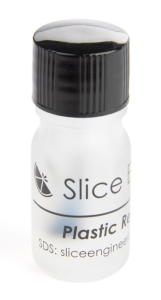
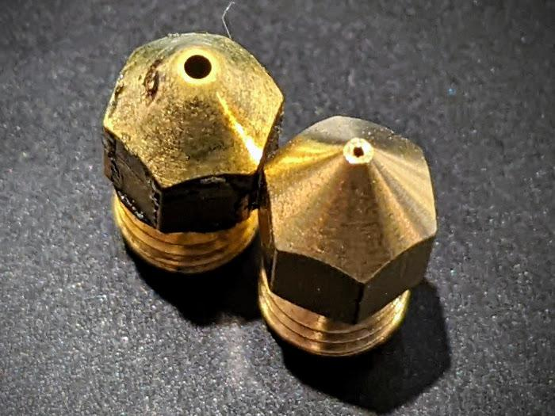

Overordnet for alle
Der findes mange former for filamenter og de fleste filamenter har nogle særlige ting der gør sig gældende for dem det kan blandt andet være
- Opbevaring
- Temperatur de skal printes ved
- Mekaniske egenskaber
- Temperatur resistens
- Styrke / brud / træk
- Særlige krav til opbevaring
- Fare - er det giftigt?
- Bortskaffelse
- Fibre
Myter om temperatur
Mange mennesker er meget optagede af, om de kører med den korrekte temperatur, men alle temperaturer er som udgangspunkt vejledende. Når man måler temperaturen på en hjemme 3D-printer, bruger man typisk en NTC-modstand, som faktisk er ret upræcis. Derfor er det meget vigtigt at konkludere, hvad der fungerer bedst på din printer, og du bør overveje følgende parametre:
- Temperatur i det rum du står i
- Træk fra åbne vinduer?
- Kabinet til printer
- Er dit filament tørt - eller måske fugtigt?
PLA
PLA (polylactid) er en type bioplastik, der er lavet af majsstivelse eller sukkerrør, og den er kendt for sin miljøvenlige karakter og lette tilgængelighed. PLA er en termoplastisk plastik, som betyder, at den kan opvarmes og formes ved høje temperaturer.
PLA plastik har en række fordele, der gør det populært til en bred vifte af anvendelser. For det første er PLA biologisk nedbrydeligt og kan omdannes til naturlige materialer, hvilket gør det til et miljøvenligt alternativ til traditionelle plastikmaterialer. Det er også stærkt, holdbart og let at arbejde med.
PLA plastik er populært inden for 3D-printing på grund af dets lave smeltepunkt, hvilket gør det nemt at 3D-printe ved hjælp af Fused Deposition Modeling (FDM) teknologi. Det er også populært til fremstilling af engangsartikler, madbeholdere, kosmetikbeholdere og emballage. PLA kan fremstilles i en række farver og finish, herunder gennemsigtig, mat og glans.
Selvom PLA har mange fordele, har det også nogle begrænsninger. Det er f.eks. ikke så modstandsdygtigt over for varme og kemikalier som traditionelle plastikmaterialer, og det kan brydes eller deformeres, hvis det udsættes for høje temperaturer.
Indstillinger
| Nozzle temp 1 | Bed temp 1 | Blæser % | Fart | BuildPlate |
|---|---|---|---|---|
| 200-210 | 40-60 | 100% | Så længe der er køl nok er der ingen problemer |
PEI, Glas, næsten alt |
Krav til printer
Der er som sådan ikke nogle krav til printeren - alle moderne printere der er lavet indenfor de sidste mange år kan printe PLA
Fordele
- Er billigt
- Er nemt at printe med for en begynder
- Kræver ikke kabinet
- Kræver ikke høje temperaturer
- Mange bruger det så er der er meget viden på nettet
- Er "ikke" usundt at indhånde
Ulemper
- Er ikke modstandsdygtigt overfor UV (Nedbrydes i solen)
- Kan ikke tåle høj temperatur
- Brækker lige over - er ikke særlig sejt
- PLA har en meget lav glas transitionstemperatur
PETG
PETG plastik (også kendt som glycol-modificeret PET eller glycol-modificeret polyester) er en type termoplastisk plastik, der er kendt for sin styrke, klarhed og modstandsdygtighed over for brud.
PETG er en videreudvikling af PET (polyethylenterephthalat), som normalt bruges til at fremstille engangsflasker til drikkevarer. Ved at tilsætte glycol til PET kan man opnå PETG, som har forbedrede egenskaber, der gør det mere velegnet til industrielle applikationer.
PETG plastik har en høj styrke-til-vægt-forhold, hvilket betyder, at det er stærkt og holdbart, men samtidig let og nemt at arbejde med. Det er også modstandsdygtigt over for UV-lys, kemikalier og stød, og det kan modstå gentagne bøjninger uden at sprække eller knække.
På grund af disse egenskaber anvendes PETG plastik ofte til fremstilling af produkter som skilte, displays, emballage, beskyttelsesbriller og medicinske udstyrskomponenter. Det kan også 3D-printes, hvilket gør det populært blandt hobbyister og professionelle, der ønsker at skabe prototyper og færdige produkter i plastik.
Indstillinger
| Nozzle temp 1 | Bed temp 1 | Blæser % | Fart | BuildPlate |
|---|---|---|---|---|
| 230-240 | 70-80 | 20% | Gerne hurtigt da PETG kan ooze ret kraftigt |
PEI men med noget på Textured plate |
Krav til printer
Der er som sådan ikke nogle krav til printeren - alle moderne printere der er lavet indenfor de sidste mange år kan printe PETG, det anbefales dog man som minimum har en silikone sock på nozzle, da PETG er ret klistreret, alternativ kan man smøre noget teflon maling på som vist herunder

Det kan også anbefales du bruger et separator middel produkt især hvis du køre på glasplader
Fordele
- Er rigtig sejt, dvs. bøjer før det knækker
- Billigt at få fat i
- Kan tåle højere temperatur før det deformere
Ulemper
- Kræver det er tørt!
- Printer skal være ret godt justeret ind da du ellers blot vil ende med en stor klump på din nozzle
- PETG har en lidt bedre glas transitionstemperatur end PLA - man stadig ikke på højde med hverken ABS eller ASA
Advarsel 
- Print ALDRIG PETG direkte på en glasplade, du skal have en eller anden seperator på for at være sikker på du kan få det af når det er koldt.
ABS
ABS (akrylonitril-butadien-styren) plastik er en termoplastisk polymer, der er kendt for sin styrke, stivhed og modstandsdygtighed over for stød og varme. ABS plastik er sammensat af tre forskellige monomerer: akrylonitril, butadien og styren.
ABS plastik har en række egenskaber, der gør det populært til en bred vifte af anvendelser. Det er stærkt og holdbart, og det kan modstå stød og varme, hvilket gør det velegnet til produktion af dele og komponenter til maskiner, biler, elektronik og legetøj. Det er også modstandsdygtigt over for kemikalier og kan male og overfladebehandles nemt.
ABS plastik har også nogle ulemper. Det kan være vanskeligt at 3D-printe, fordi det kræver en højere temperatur og er mere modtageligt for warping og splitting end andre materialer som PLA. Det afgiver også en lugt, når det smelter, og dampene kan være skadelige, hvis de indåndes over længere tid. Derfor anbefales det normalt at 3D-printe ABS i et rum med god ventilation.
Alt i alt er ABS plastik en alsidig plasttype med en række egenskaber, der gør det velegnet til en bred vifte af applikationer, herunder 3D-printning, mekaniske dele og elektronik.
Indstillinger
| Nozzle temp 1 | Bed temp 1 | Blæser % | Fart | BuildPlate |
|---|---|---|---|---|
| 240-260 | 100-110 | 10-20% | Så hurtigt din printer kan | PEI, enten smooth eller textured |
Krav til printer
- Enclosure
Fordele
- Du kan nemt eftebehandle ABS, det er nemt at bore i, du kan slibe på det og male på det uden større udfordringer
- Har en meget høj glas transitionstemperatur - så kan modstå meget varme
Ulemper
- Kræver enclosure, da ABS [warper] ret meget, det er bedst hvis du er over 50 for at undgå printet slipper pladen
- Er usundt at indånde i længere tid
- Kræver høj temperatur på nozzle derfor kan det ikke printes af printere hvor toolhead er lavet af PETG / ABS som f.eks. Prusa, men du vil kunne printe det med en Voron eller Bambu Labs printer uden problemer ABS
Sikkerheds Disclaimer
ABS-plastik er generelt betragtet som sikker at bruge i hjemmeprintere, men der er nogle sundhedsrisici, som brugere skal være opmærksomme på.
ABS-plastik frigiver dampe, når det opvarmes og smelter, og disse dampe kan være skadelige at indånde i større mængder over længere tid. De kan forårsage irritation af øjne, næse og hals, hovedpine, kvalme og svimmelhed. I ekstreme tilfælde kan indånding af ABS-dampe føre til sundhedsmæssige problemer som kræft og astma. Derfor er det vigtigt at have ordentlig ventilation, når man arbejder med ABS-plastik.
Desuden kan ABS-plastik afgive en vis mængde støv og partikler, når det bearbejdes eller slibes. Disse partikler kan irritere øjne, næse og hals og kan være skadelige, hvis de indåndes i store mængder.
For at reducere sundhedsrisikoen ved brug af ABS-plastik bør man altid anvende ordentlig ventilation, undgå indånding af dampe og partikler, og undgå at udsætte sig selv for materialet i længere tid. Det anbefales også at bruge personligt beskyttelsesudstyr, såsom handsker, øjenbeskyttelse og åndedrætsværn, når man arbejder med ABS-plastik.
Generelt set kan ABS-plastik være sikkert at bruge i hjemmeprintere, så længe man tager de nødvendige forholdsregler for at beskytte sig selv mod skadelige dampe og partikler.
ASA
Både ABS (akrylonitril-butadien-styren) og ASA (akrylonitril-styren-acrylester) er termoplastiske polymerer, der anvendes til fremstilling af stærke, holdbare dele og komponenter. De er begge modstandsdygtige over for stød og vejrforhold og har en lignende sammensætning, men der er nogle vigtige forskelle mellem de to materialer.
En af de største forskelle mellem ABS og ASA er, at ASA er mere modstandsdygtig over for vejrpåvirkninger end ABS. ASA er mere UV-stabil end ABS, og det bevarer sin farve og overfladebehandling bedre i sollys og ekstreme temperaturer. Derfor er ASA ofte foretrukket til udendørs anvendelser, hvor materialet vil blive udsat for sollys og andre vejrforhold.
En anden forskel mellem ABS og ASA er, at ASA normalt er mere kemisk modstandsdygtig end ABS. ASA kan modstå kemikalier som alkohol, benzin og olie bedre end ABS, og det er mindre modtageligt for misfarvning eller deformation, når det udsættes for kemikalier.
En tredje forskel er, at ASA normalt er mere glansfuldt end ABS og giver en glattere overfladefinish. Dette gør ASA til et populært valg til applikationer, hvor udseendet er vigtigt, såsom bildele og elektronik.
I forhold til 3D-printning kan ASA være lidt mere vanskeligt at printe end ABS, da det kræver en højere temperatur og mere avancerede printerindstillinger. Dog er ASA mere modstandsdygtig over for warping og splitting end ABS og er derfor et bedre valg til større print.
I alt er både ABS og ASA populære materialer til fremstilling af dele og komponenter, men ASA er normalt mere velegnet til udendørs applikationer, hvor det er udsat for sollys og andre vejrforhold, mens ABS er mere alsidigt og kan anvendes i en bred vifte af applikationer.
Indstillinger
Samme som ABS
Krav til printer
Samme som ABS, dog gerne endnu højere temperatur på kabinet
Fordele
Samme som ABS dog med følgende yderligere fordele
- Bedre til at modstå UV lys
- Warper mindre end ABS
Ulemper
Samme som ABS
Sikkerheds Disclaimer
ABS-plastik er generelt betragtet som sikker at bruge i hjemmeprintere, men der er nogle sundhedsrisici, som brugere skal være opmærksomme på.
ABS-plastik frigiver dampe, når det opvarmes og smelter, og disse dampe kan være skadelige at indånde i større mængder over længere tid. De kan forårsage irritation af øjne, næse og hals, hovedpine, kvalme og svimmelhed. I ekstreme tilfælde kan indånding af ABS-dampe føre til sundhedsmæssige problemer som kræft og astma. Derfor er det vigtigt at have ordentlig ventilation, når man arbejder med ABS-plastik.
Desuden kan ABS-plastik afgive en vis mængde støv og partikler, når det bearbejdes eller slibes. Disse partikler kan irritere øjne, næse og hals og kan være skadelige, hvis de indåndes i store mængder.
For at reducere sundhedsrisikoen ved brug af ABS-plastik bør man altid anvende ordentlig ventilation, undgå indånding af dampe og partikler, og undgå at udsætte sig selv for materialet i længere tid. Det anbefales også at bruge personligt beskyttelsesudstyr, såsom handsker, øjenbeskyttelse og åndedrætsværn, når man arbejder med ABS-plastik.
Generelt set kan ABS-plastik være sikkert at bruge i hjemmeprintere, så længe man tager de nødvendige forholdsregler for at beskytte sig selv mod skadelige dampe og partikler.
PA (Nylon)
PA (Polyamid), også kendt som nylon, er en type termoplastisk plastik, der er kendt for sin styrke, holdbarhed og modstandsdygtighed over for slid. PA plastik er en polymer, der er sammensat af enheder af amidbindinger.
PA plastik har en række egenskaber, der gør det velegnet til en bred vifte af anvendelser. Det er stærkt og slidstærkt og kan modstå gentagne belastninger uden at bryde eller miste sin form. Det er også modstandsdygtigt over for kemikalier, varme og korrosion, hvilket gør det velegnet til anvendelser i miljøer, hvor der er høje krav til holdbarhed og modstandsdygtighed.
PA plastik er populær i en række forskellige applikationer, herunder bil- og flydele, elektronik, legetøj og sportsudstyr. Det kan også 3D-printes, hvilket gør det populært blandt hobbyister og professionelle, der ønsker at skabe prototyper og færdige produkter i plastik.
I forhold til 3D-printing kan PA være vanskeligere at printe end traditionelle plastikmaterialer på grund af dets høje smeltepunkt og tendens til at absorbere fugt fra luften, hvilket kan påvirke printkvaliteten og holdbarheden. Derfor kræver det ofte en speciel tørring og forberedelse af filamentet, inden det kan 3D-printes.
I alt er PA plastik en stærk og alsidig termoplastisk plastik, der er velegnet til mange forskellige applikationer, der kræver holdbarhed, modstandsdygtighed over for slid og kemikalier og høj styrke.
PA er f.eks. det materiale snoren i din kantklipper er lavet af.
Indstillinger
| Nozzle temp 1 | Bed temp 1 | Blæser % | Fart | BuildPlate |
|---|---|---|---|---|
| 230-240 | 80-90 | 50% | Print LANGSOMT! | Virker på de fleste overflader dog bedst med f.eks. Dimafix |
Krav til printer
Der er ikke nogle specielle krav til at printe Nylon på din printer
Fordele
- MEGET stærkt materiale, er super sejt - kan næsten ikke knække
Ulemper
- Suger [fugtighed], indenfor 30-60 minutter vil der være så meget fugt i det fra det rum det er i
TPU (Gummi)
TPU (Thermoplastic Polyurethane) plastik er en type termoplastisk elastomer, der er kendt for sin fleksibilitet, modstandsdygtighed over for stød og slid og alsidighed. TPU plastik er sammensat af polyurethan, som er en polymer, der består af enheder af urethanbindinger.
TPU plastik har en række egenskaber, der gør det velegnet til en bred vifte af applikationer. Det er meget fleksibelt og kan bøjes, strækkes og komprimeres gentagne gange uden at sprække eller miste sin form. Det er også modstandsdygtigt over for stød og slid, hvilket gør det velegnet til applikationer, hvor materialet vil blive udsat for belastning og gnidning.
TPU plastik kan fremstilles i en række forskellige hårdheder og farver, hvilket gør det alsidigt og brugbart i mange forskellige applikationer. Det bruges ofte til produktion af sko og støvler, sportsudstyr, elektronik tilfælde og dæksler, medicinske udstyrskomponenter, og det er også populært i 3D-printing på grund af dets fleksibilitet og modstandsdygtighed.
I forhold til 3D-printing kan TPU være vanskeligere at printe end traditionelle plastikmaterialer på grund af dets fleksibilitet. Det kan kræve specielle indstillinger på en 3D-printer, herunder lavere hastighed, højere temperatur og brug af en printplatform med bedre greb.
I alt er TPU plastik en alsidig og holdbar elastomer, der er velegnet til mange forskellige applikationer, der kræver fleksibilitet, slidstyrke og modstandsdygtighed over for stød.
Indstillinger
| Nozzle temp 1 | Bed temp 1 | Blæser % | Fart | BuildPlate |
|---|---|---|---|---|
| 225-235 | 40-60 | 10% | 15-20 mm/s | Alt, men god ide med separator middel |
Krav til printer
- Krøver en dualgear extruder eller ligende
- Kræver direct drive extruder da gummi jo giver sig skal der være kortest muligt fra extruder til nozzle for at undgå problemer
Fordele
- Super flexibelt
- Godt mod kemikalier
Ulemper
- Rigtig svært at printe med
- Skal printes meget langsomt
- Kræver en printer der kan printe materialet
Fibre
Tilsætning af fibre til 3D-printmaterialer kan forbedre styrke, stivhed, holdbarhed og andre mekaniske egenskaber. Fibre kan også forbedre materialets modstandsdygtighed over for temperatur, kemikalier og slid. Der er flere typer af fibre, der kan tilsættes til 3D-printmaterialer, herunder glasfiber, kulstoffiber, kevlar og aramidfiber.
Glasfiber tilsættes ofte til 3D-printmaterialer, fordi det kan forbedre styrke og stivhed. Glasfiber er også relativt billig og nem at arbejde med. Tilsætning af glasfiber kan gøre materialet mere modstandsdygtigt over for brud og deformation.
Kulstoffiber er en anden type fiber, der ofte bruges til at forbedre styrke og stivhed i 3D-printmaterialer. Kulstoffiber er meget stærkere end glasfiber og kan give en højere styrke-til-vægt-forhold. Tilsætning af kulstoffiber kan gøre materialet mere modstandsdygtigt over for stød og vibrationer.
Kevlar og aramidfiber bruges ofte i 3D-printmaterialer, der kræver høj modstandsdygtighed over for slid, stød og kemikalier. Disse fibre er meget stærke og kan give en høj grad af slidstyrke og modstandsdygtighed over for kemikalier og slid.
Der er også en række andre fibre, der kan tilsættes til 3D-printmaterialer, såsom hampfibre, træfibre og metalpartikler. Disse fibre kan give materiale forskellige egenskaber afhængigt af deres sammensætning og størrelse.
Det er vigtigt at bemærke, at tilsætning af fibre til 3D-printmaterialer kan påvirke printkvaliteten og kræver ofte en justering af printerindstillingerne. Derfor er det vigtigt at bruge et filament, der er specielt designet til at indeholde fibre, og følge producentens anbefalinger og retningslinjer.
Samt du skal være sikker på ved f.eks. kulfiber at du har en hærdet eller ruby nozzle, ellers vil du rigtig hurtigt opleve at din diameter på din nozzle ikke længere vil være den ønskede diameter.

Anbefalinger
- Det anbefales ved fiberholdige materialer at gå op i dysestørelse
- Du skal hvis det er kulfiber have et heat-break der er lavet af jern (Det lille rør mellem Hot og Cold zone på printeren)